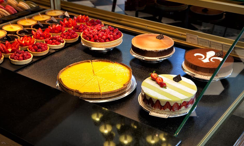
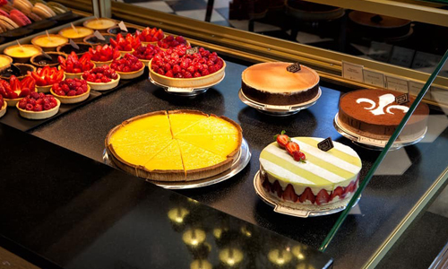

ABOUT OUR CAFE
 

大海原を悠然と泳ぐクジラの姿を見たことがあるでしょうか。そのゆったりとした動きや優しい眼差しを見ていると、慌ただしい日常が遠い世界のできごとのように感じられるのです。時間が経つのも忘れて、ただただクジラを眺めてぼーっと過ごしたひとときの心の充実を、私は今も忘れません。
そんなゆったりとした時間を過ごせるカフェがあったら……そんな思いでつくったのが、このKUJIRA CAFEです。古材を活用した味わいのある内装、花と緑に囲まれたテラス。旬の味覚をふんだんに使ったタルトや、地元の野菜にこだわったキッシュは、どれも手作りです。コーヒーは注文をいただいてから焙煎し、挽きたての香りをお楽しみいただいております。
天気のいい日には、自然を感じられるテラス席もおすすめ。テラス席のみ、ペットの同伴もOKです。おひとり様もお子様連れの方も、お気に入りのお席で、思い思いの時間をゆったりとお過ごしください。
カフェでの時間をより楽しいものにしていただくべく、フラワーアレンジメントの講座や絵本の読み聞かせ、作品展やライブなど、さまざまなイベントも開催しております。スケジュールは＜News＞で告知いたしますので、ご確認くださいませ。
皆さまのお越しを心よりお待ちしております。
KUJIRA Cafe 店主
鯨井コウタ
Info
| Adress | 〒199-9999 或留県九寺楽市九寺楽町3-30-8（地図） |
|---|---|
| Tel | 09-9280-2611 |
| Opening Hours | 10:00~22:00 |
| Closed | 水曜日・日曜日 |
| Booking | ご予約は、お電話もしくはお問い合わせフォームより受け付けております。 ご予約希望時間と人数をお知らせください。 ※フォームからのご予約にはお時間がかかる場合がございますので、ご了承ください。 |